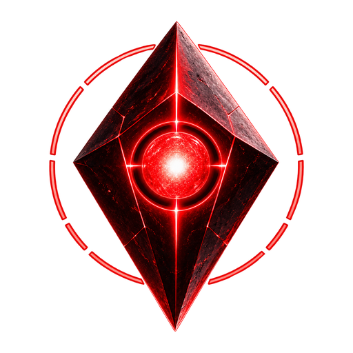
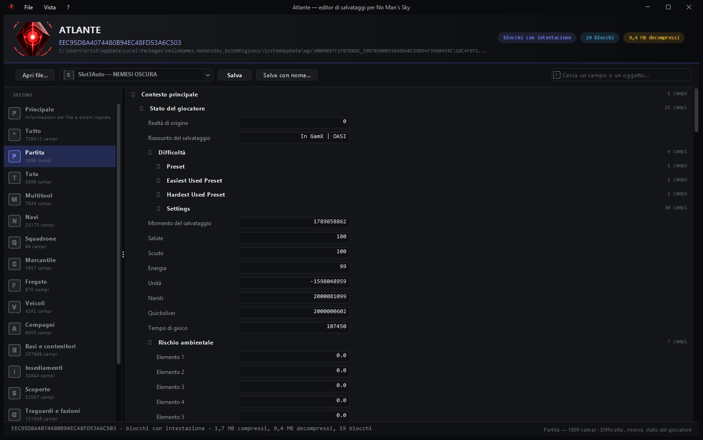

Editor di salvataggi per No Man's Sky
Scritto da zero in Java, senza dipendenze esterne. Legge i salvataggi, ne decodifica le chiavi cifrate, li mostra in un albero con le icone di gioco e li riscrive verificando che i dati non cambino.
Prima di ogni scrittura il contenuto viene ricompattato, riscompattato e confrontato campo per campo con l'originale: se anche un solo valore differisce, il file non viene toccato.
Non è un disegno preparato a parte: l'immagine è la fotografia dell'applicazione vera mentre legge un salvataggio reale. Gli oggetti mostrano l'icona e il nome di gioco presi dal catalogo, non la sigla interna.

| Funzione | Stato |
|---|---|
| Lettura dei salvataggi Xbox Game Pass | funziona |
| Lettura dei salvataggi Steam e GOG | funziona |
| Dati account (ricompense, QuickSilver) | funziona |
| Scompattazione e ricompressione LZ4 | funziona |
| Decodifica delle chiavi cifrate | 640.510 su 640.567 |
| Catalogo di gioco con nomi, icone e descrizioni | 5.587 voci |
| Modifica dei valori e scrittura con verifica | funziona |
| Copertura totale dei campi del salvataggio | tutti |
Un campo come 0.6000000238418579 riscritto come 0.6 è un valore diverso, e il gioco se ne accorge. Ogni numero conserva il testo originale.
Non c'è un "sei sicuro?" da cliccare: se il contenuto non sopravvive al giro completo, il programma si ferma da solo. Una copia di sicurezza viene comunque creata.
Struttura dei blocchi, intestazioni dei metadati, forma dell'indice dei contenitori: tutto ricavato leggendo i byte e scritto nel README, perché serva anche a chi non usa questo programma.
Un JDK 8 o superiore. Nient'altro: nessuna libreria da scaricare, nessun gestore di pacchetti. Si compila con compila.bat su Windows o ./compila.sh altrove.